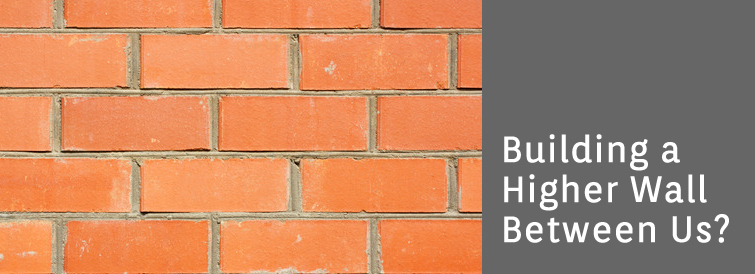

Articles

Google Glasses: Building a Higher Wall Between Us?
Google has launched a video that introduces the google glasses technology, soon to be available on the market. It seems that wearing the glasses is like having your smart phone on your head, with voice activation. They have the ability to take instant pictures and videos hands free, and a lovely image of your recent text pops up in the top right hand corner. While the shots of heart warming family moments, and the thrilling sky diving videos does seems compelling, I'm not sold. At all. If texting while driving is a problem, don't you think texting and sky diving may also be?
I have a hard time envisioning the future of human kind as we introduce things like google glasses into the mix. If mobile technology and social networking hasn't already warped our sense of human connection, this certainly will. People are so preoccupied (myself included) with their smart phones already: updating their status on facebook, sending out tweets, checking e-mail, texting, banking, shopping, playing games and paying bills. Admittedly, we say good morning to our iPhones before we even look at each other in the morning. Even though we work in this industry, there's not a day that goes by that we don't wish for more human connection, more simplicity, less stress and more uninterrupted time together.
We're already doing enough things at once with our given mobile technology, isn't this going a bit far to make all of our current goings on now handsfree? While it seems convenient to capture our lives with a simple voice command, isn't there a limit to the madness? Are we really living meaningful lives anymore? Is there a technology that could be designed to actually bring people closer together?
© 2017 Chris Gillis Design All Rights Reserved.